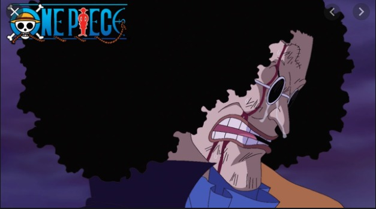

Perfil
Esse site é o perfil de aluno de programação
Sou estudante de ciência da computação na UVV. Meu nome é Lucas Salgado Perim , tenho 19 anos natural de Governador Valadares-MG .
Listas das matérias que curso :
- Construção de Software para Web
- Design e Desenvolvimente de Banco de Dados
- Estrutura de Computadores
- Experiência e Interface com o Úsuario
- Gestão de Pessoas (EAD)
- Introdução à Ciência da Computação
- Lógica para Computação
Meus filmes favoritos:
- Forest Gump: O Contador de Histórias
link sobre crítica do filme
- Django Livre
link sobre crítica do filme
- Akira
link sobre crítica do filme
--ALEGRIA--------TRISTEZA-------
